De una secuencia de instrucciones a programas que leen datos, toman decisiones y repiten tareas.
Empieza configurando el perfil Estricto. Después escribe el primer saludo y avanza por los ejemplos sin saltarte las pruebas. No necesitas conocimientos previos de programación.
Encontrarás programas completos, explicaciones de los signos y ejercicios con resultados para comparar. El objetivo es comprender qué hace cada instrucción, no solo conseguir que el código se ejecute.
La ruta: comprender → escribir → predecir → ejecutar → modificar. Conserva tus versiones para observar qué cambió y por qué.
Este manual forma una ruta gradual. Primero practicarás instrucciones que muestran mensajes; después incorporarás datos, decisiones y tareas reutilizables. No hace falta memorizar toda la sintaxis antes de comenzar.
| Bloque | Qué aprenderás |
|---|---|
| Fundamentos | Fundamentos y algoritmos cotidianos. |
| Datos | Tipos de datos, entrada y operaciones. |
| Control | Condiciones, decisiones y ciclos. |
| Colecciones | Arreglos, matrices y subprocesos. |
| Consulta | Consulta, corrección y práctica final. |
Una forma de trabajar
Reconoce cada bloque. Programa completo: se copia íntegro. Fragmento: ilustra una parte y necesita contexto. Salida: es lo que aparece en la consola, no código para pegar.
Un algoritmo es una secuencia ordenada y precisa de pasos para resolver una tarea. El orden importa: no puedes mostrar el resultado de una suma antes de calcularlo.
El pseudocódigo representa esos pasos mediante instrucciones legibles. PSeInt es una herramienta para escribir e interpretar programas con su propia sintaxis, es decir, con reglas sobre cómo se escriben las instrucciones.
Un programa concreta el algoritmo en instrucciones que PSeInt puede interpretar. Al ejecutarlo, la herramienta realiza operaciones y muestra información siguiendo esas instrucciones.
Mostrar «Prepara café» no prepara café físicamente. En los primeros ejemplos, el equipo solo presenta indicaciones para una persona.
El perfil del lenguaje determina qué reglas exige PSeInt. Este manual utiliza Estricto, no un perfil personalizado que permita omitir declaraciones u otros elementos.
Ruta de configuración: Configurar → Opciones del Lenguaje (perfiles) → Estricto
Selecciona el perfil y confirma el cambio. Para los arreglos y las matrices, comprueba además que los índices comiencen en 0. La posición de los controles puede variar entre versiones.
| Zona | Para qué sirve |
|---|---|
| Editor | Escribir y corregir el programa. |
| Ejecución | Ver mensajes e introducir datos. |
| Errores | Consultar qué instrucción necesita revisión. |
Rutina inicial: guarda el archivo, verifica la sintaxis y ejecuta. Si aparece un error, lee el mensaje y revisa también la línea anterior a la señalada.
Un programa tiene un comienzo, un conjunto de instrucciones y un final. Copia este ejemplo íntegro en el editor. Por ahora no pide datos ni guarda valores.
Programa completo
Proceso SaludoInicial
Escribir "Hola, mundo";
FinProceso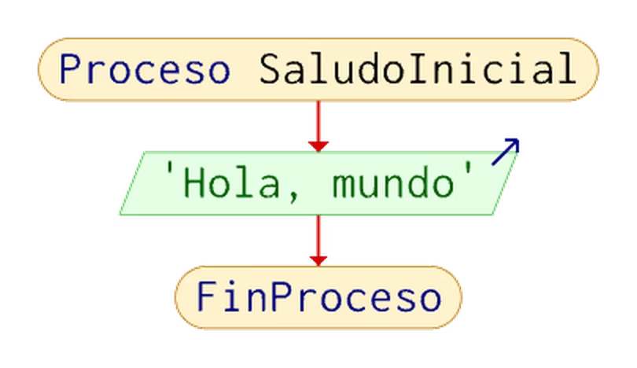
| Línea | Qué hace |
|---|---|
Proceso SaludoInicial | Abre el programa y le da un nombre. |
Escribir | Muestra el mensaje situado entre comillas. |
FinProceso | Marca el final del programa. |
Salida en pantalla
Hola, mundo
Proceso y Escribir son palabras reservadas: tienen un significado para PSeInt. SaludoInicial es un identificador elegido por ti, sin espacios ni tildes. "Hola, mundo" es texto literal.
La ejecución sigue el orden escrito. Cambia solo el mensaje, conserva las comillas rectas y vuelve a ejecutar. Las comillas delimitan el texto, no aparecen en la salida.
Los signos indican dónde termina una instrucción y cómo se agrupan sus partes. Copiarlos bien importa tanto como escribir las palabras reservadas.
| Signo | Uso | Ejemplo mínimo |
|---|---|---|
; | Terminar una instrucción secuencial. | Leer edad; |
"" | Delimitar texto literal. | "Buenos días" |
, | Separar elementos. | Escribir "Edad: ", edad; |
() | Agrupar una operación. | (2 + 3) * 4 |
[] | Indicar un índice de arreglo. | notas[0] |
<- | Asignar un valor. | edad <- 18; |
Fragmento
// Este comentario no se ejecuta Escribir "Comienza la práctica";
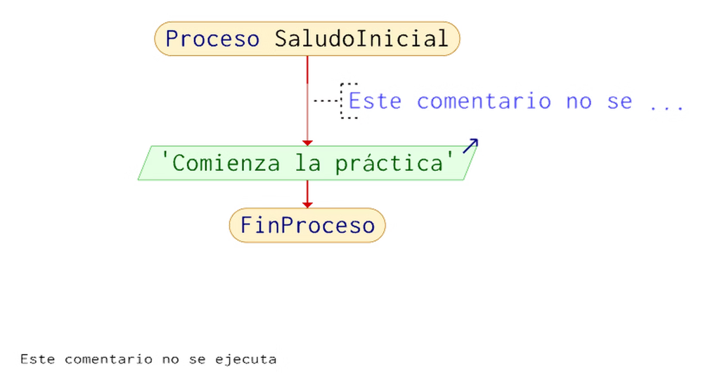
La sangría desplaza hacia dentro las instrucciones de un bloque y ayuda a reconocerlo. No añade acciones. Tampoco coloques ; indiscriminadamente en Proceso, cabeceras con Entonces o Hacer, ni cierres de bloque.
Palabras clave e identificadores van sin tildes; los mensajes sí pueden llevarlas. En código, usa comillas rectas ", no comillas tipográficas.
Escribir envía información a la pantalla. El texto literal necesita comillas; un número o una operación se escribe sin ellas. Puedes combinar varias expresiones separándolas con comas.
Programa completo
Proceso Mensajes
Escribir "Bienvenida";
Escribir "Resultado: ", 2 + 3;
Escribir "Cantidad: ", 4;
Escribir "Una " Sin Saltar;
Escribir "sola línea";
FinProceso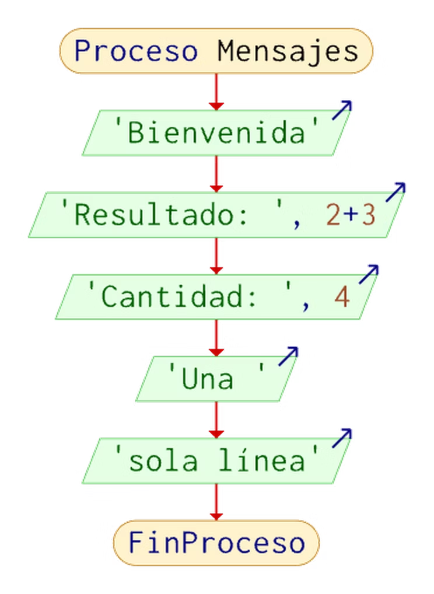
Salida en pantalla
Bienvenida Resultado: 5 Cantidad: 4 Una sola línea
Una llamada normal a Escribir termina cambiando de línea. Con Sin Saltar, la próxima salida continúa en la misma. El espacio después de «Una» está dentro de las comillas y separa las palabras.
Escribir "2 + 3" mostraría esos caracteres, sin calcular nada. En cambio, 2 + 3 produce el valor 5.
Prueba una modificación. Muestra «Hola» y «Ana» en líneas separadas. Luego únelos en una sola línea con un espacio entre ambas palabras.
Este programa describe una preparación de café soluble. Cada instrucción muestra un paso; quien prepara la bebida es la persona que lee los mensajes. No hacen falta variables ni entrada de datos.
Programa completo
Proceso HacerCafe
Escribir "Reúne taza y utensilios.";
Escribir "Coloca café soluble en la taza.";
Escribir "Calienta agua con precaución.";
Escribir "Vierte el agua con cuidado.";
Escribir "Mezcla con una cuchara.";
Escribir "Deja enfriar antes de beber.";
FinProceso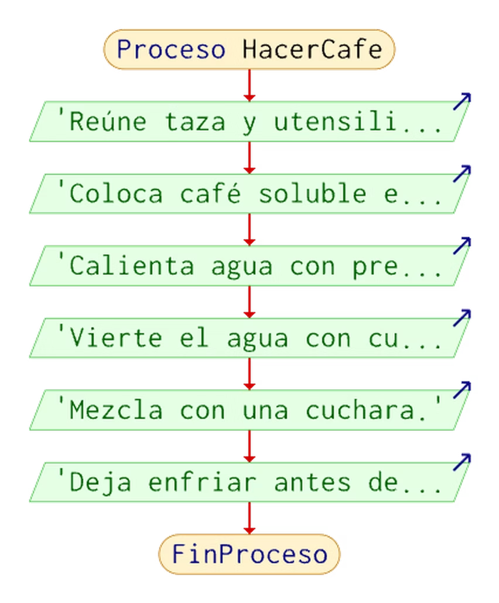
Salida en pantalla
Reúne taza y utensilios. Coloca café soluble en la taza. Calienta agua con precaución. Vierte el agua con cuidado. Mezcla con una cuchara. Deja enfriar antes de beber.
Calentar y Mezclar no son instrucciones de PSeInt. Las acciones cotidianas se describen entre comillas dentro de Escribir. La ejecución no espera a que termines cada acción.
Reto: añade un mensaje para guardar los utensilios en un lugar adecuado de la secuencia. Conserva la sangría, las comillas y el punto y coma.
Vamos a mostrar indicaciones para una persona. Este modelo secuencial no observa el tránsito ni comprueba señales. La decisión de cruzar depende de la situación real y de las normas del lugar.
Programa completo
Proceso CruzarCalle
Escribir "Busca un cruce habilitado.";
Escribir "Detente en el borde.";
Escribir "Observa direcciones y señales.";
Escribir "Espera hasta que esté permitido";
Escribir "y sea seguro cruzar.";
Escribir "Cruza atento, sin correr.";
FinProceso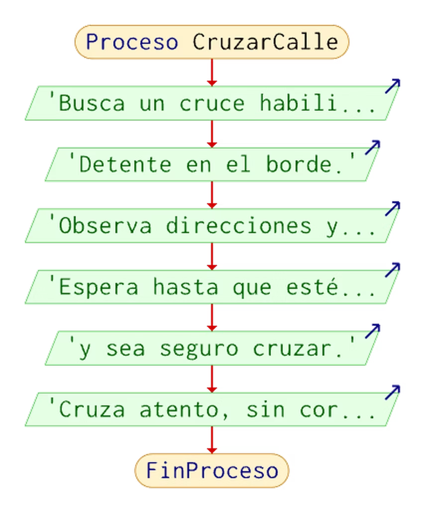
Salida en pantalla
Busca un cruce habilitado. Detente en el borde. Observa direcciones y señales. Espera hasta que esté permitido y sea seguro cruzar. Cruza atento, sin correr.
Observa todas las direcciones relevantes, no solo una. Una señal favorable no basta por sí sola: también debe ser seguro cruzar.
Escribir «Espera» no crea una espera ni un ciclo del programa. Solo muestra la palabra. Más adelante aprenderás a repetir instrucciones mediante condiciones.
Cada mensaje expresa una acción comprensible. El código conserva la estructura de los ejemplos anteriores: comienza, muestra instrucciones en orden y termina.
Programa completo
Proceso LavarseDientes
Escribir "Prepara el cepillo y la pasta.";
Escribir "Cepilla con cuidado";
Escribir "todas las superficies.";
Escribir "Escupe la pasta.";
Escribir "Limpia el cepillo.";
Escribir "Guarda el cepillo.";
FinProceso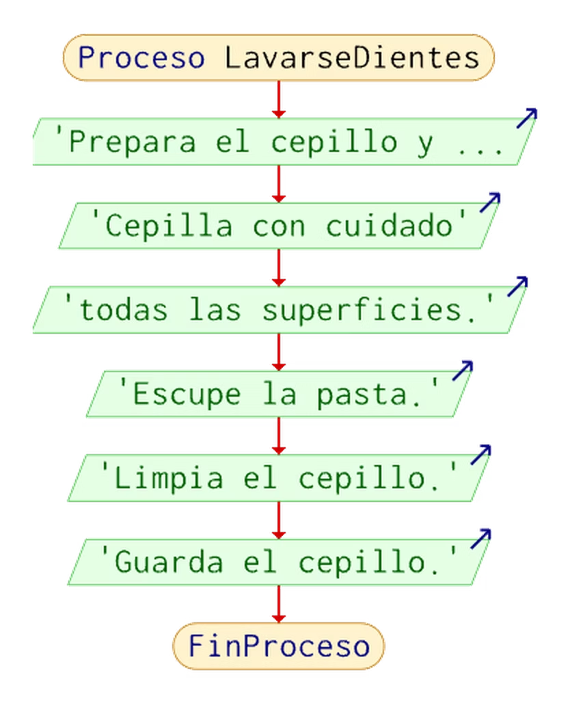
Salida en pantalla
Prepara el cepillo y la pasta. Cepilla con cuidado todas las superficies. Escupe la pasta. Limpia el cepillo. Guarda el cepillo.
Escribir.No inventes Cepillar: la acción humana va entre comillas; PSeInt ejecuta Escribir.
Una variable es un espacio identificado por un nombre donde el programa guarda un dato. Su valor puede cambiar durante la ejecución. El nombre permite consultar ese espacio sin conocer su ubicación interna.
Fragmento: declarar, inicializar y actualizar
Definir edad Como Entero; edad <- 18; edad <- 19;
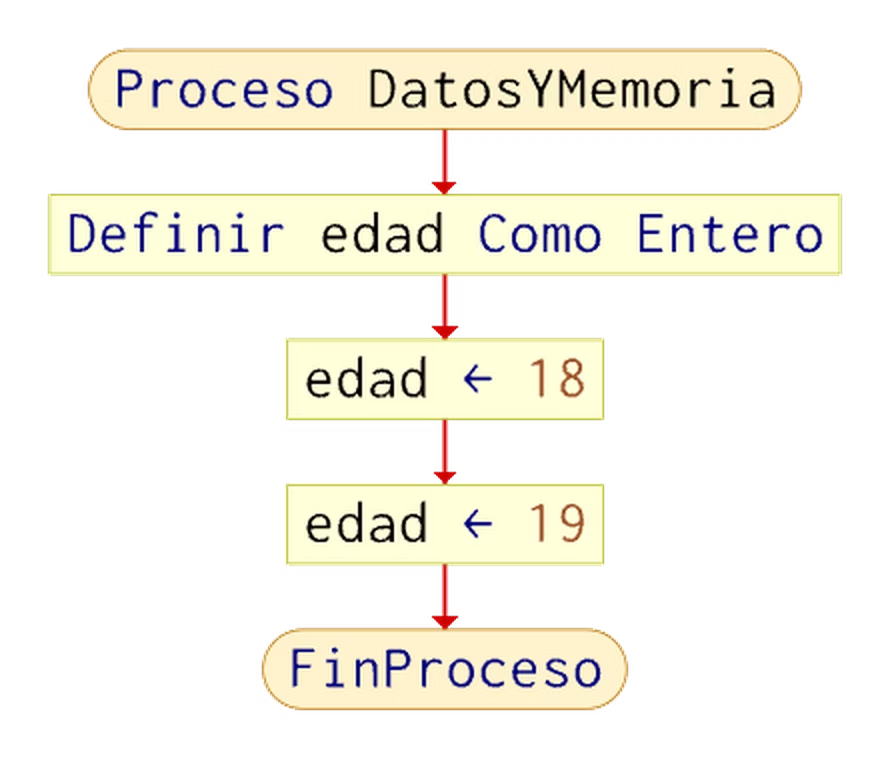
| Tras la primera asignación | Tras la actualización |
|---|---|
| edad = 18 | edad = 19 |
Definir declara el nombre y el tipo. La primera asignación inicializa la variable; la segunda sustituye el valor anterior. El espacio no conserva ambos números a la vez.
Empieza con una letra. Usa letras sin acentos, dígitos y guion bajo: edad, precio2 o total_compra. Evita espacios, tildes y palabras reservadas como Leer.
Declarar no equivale a asignar. En Estricto, proporciona un valor con <- o Leer antes de usar la variable en una operación o salida.
El tipo indica qué clase de dato puede guardar una variable. Elige el tipo por su significado y por las operaciones que necesitas realizar, no por cómo quieres que se vea en pantalla.
| Declaración | Significado y valor válido |
|---|---|
Definir edad Como Entero; | Número sin fracción. 18 |
Definir precio Como Real; | Número que puede tener decimales. 12.5 |
Definir disponible Como Logico; | Valor de verdad. Verdadero |
Definir inicial Como Caracter; | Texto. "A" |
Definir nombre Como Cadena; | Texto. "Ana" |
Caracter y Cadena son nombres equivalentes para texto. No significan, respectivamente, «una letra» y «muchas letras». Los ejemplos de la tabla no establecen límites de longitud.
Fragmento: agrupar declaraciones del mismo tipo
Definir a, b Como Entero; a <- 4; b <- 6;
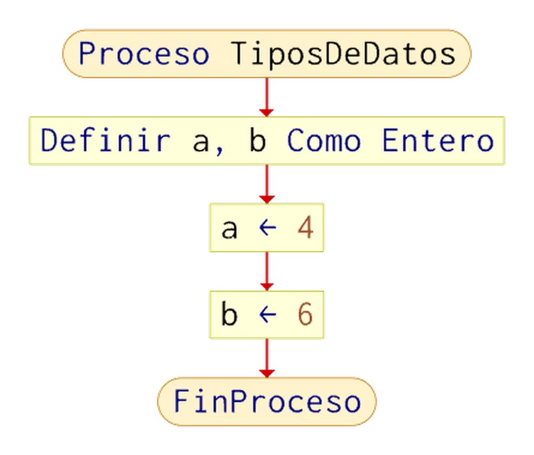
La forma Como Entero es válida para varias variables; no es obligatorio pluralizar. Usa punto decimal en los números y escribe Verdadero o Falso sin comillas cuando sean valores lógicos.
Usa Entero para cantidades discretas, como un número de unidades. Usa Real para precios, mediciones o resultados con decimales. No elimines decimales de dinero solo para guardarlo en un entero.
Programa completo
Proceso TiposNumericos
Definir cantidad Como Entero;
Definir precio, total Como Real;
cantidad <- 3;
precio <- 12.5;
total <- cantidad * precio;
Escribir "Total: ", total;
FinProceso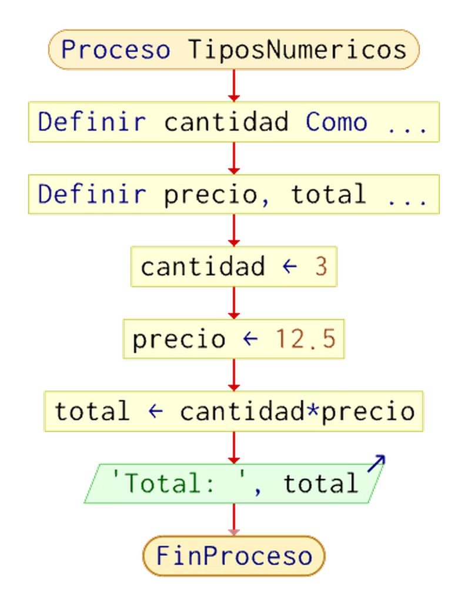
Salida esperada
Total: 37.5
Una división puede producir una fracción aunque sus operandos sean enteros. TRUNC quita la parte decimal; REDON redondea al entero más cercano. No son la misma operación.
| Expresión | Valor | Qué sucede |
|---|---|---|
7 / 2 | 3.5 | Se conserva la fracción. |
TRUNC(3.8) | 3 | Se elimina el decimal. |
REDON(3.8) | 4 | Se aproxima al entero cercano. |
Comprueba: si cambias la cantidad a 2, el total esperado es 25. La variable total sigue siendo Real aunque ese resultado no necesite decimales.
Una variable de texto guarda letras, espacios y otros caracteres. En PSeInt puedes declarar texto con Caracter o Cadena. Ninguna de estas palabras limita por sí sola el dato a una única letra.
Programa completo
Proceso SaludarPorNombre
Definir nombre Como Caracter;
Escribir "¿Cómo te llamas?";
Leer nombre;
Escribir "Hola, ", nombre;
FinProceso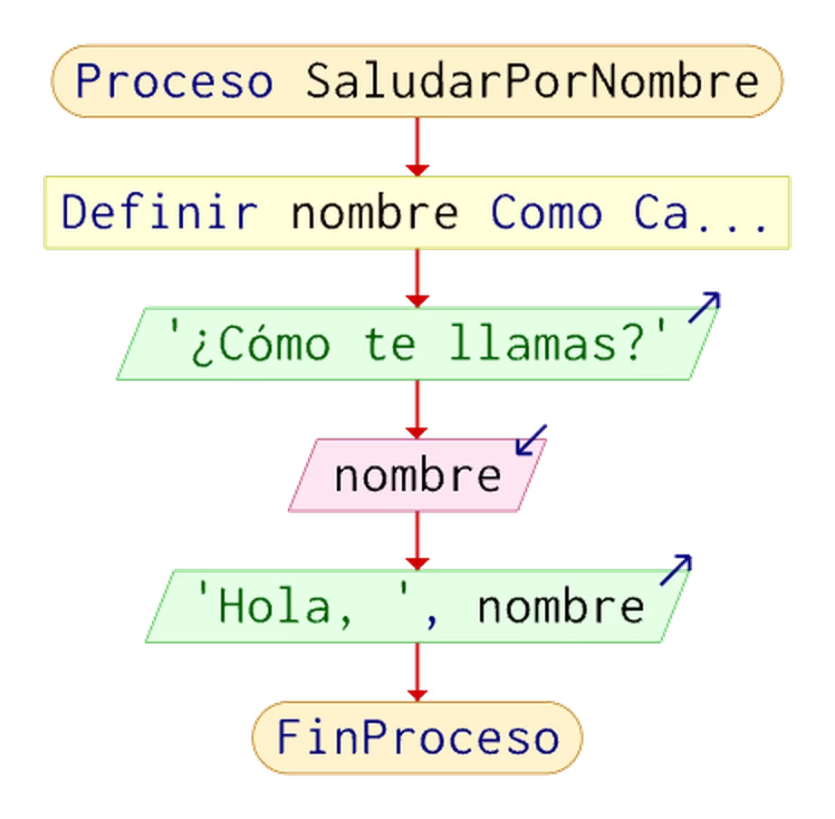
| Entrada de prueba | Última salida |
|---|---|
| Ana | Hola, Ana |
Leer recibe lo que introduces y lo guarda en nombre. En la última línea, el texto fijo lleva comillas; la variable no, porque queremos mostrar su contenido.
Fragmento: otro nombre válido
Definir apellido Como Cadena; apellido <- "Lopez";
Dimension nombre[25] no limita un nombre a 25 caracteres: crea un arreglo de 25 elementos. Una variable de texto simple no necesita Dimension.
Cuando escribas un nombre en la consola para esta prueba, introduce Ana, sin las comillas que se usan para los literales del código.
Un dato Logico representa dos posibilidades: Verdadero y Falso. Sirve para guardar si se cumple una condición. No es un mensaje: Verdadero es un valor lógico, mientras que "Verdadero" es texto.
Programa completo
Proceso DatosLogicos
Definir disponible, esMayor Como Logico;
Definir edad Como Entero;
disponible <- Verdadero;
edad <- 18;
esMayor <- edad >= 18;
Escribir "Disponible: ", disponible;
Escribir "Mayor de edad: ", esMayor;
FinProceso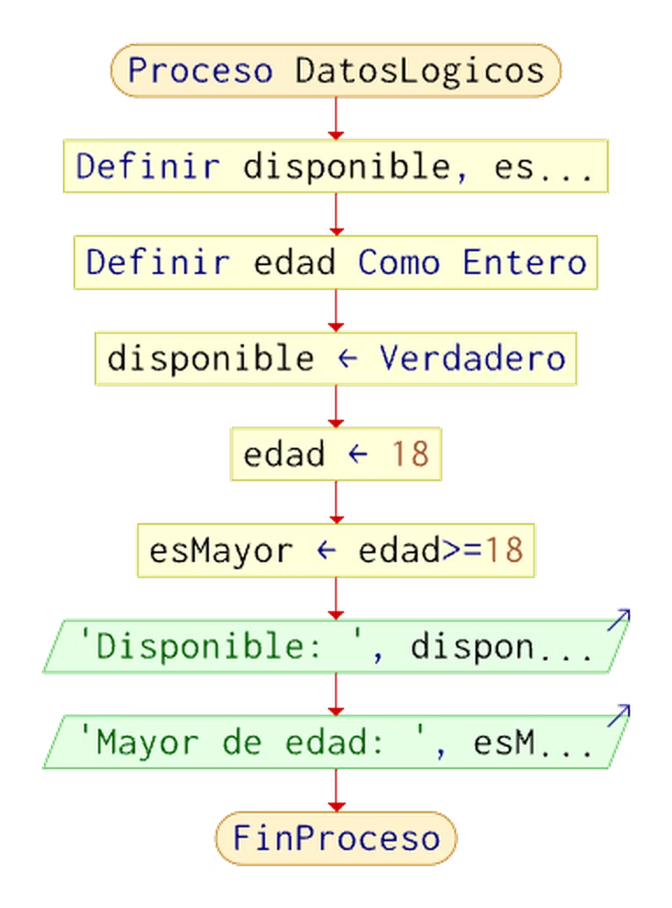
Valores esperados en la salida
Disponible: Verdadero Mayor de edad: Verdadero
edad >= 18 pregunta si la edad es mayor o igual que 18. Primero se evalúa la comparación y después se guarda su resultado en esMayor. Todavía no estamos eligiendo una rama del programa.
| edad | Comparación | esMayor |
|---|---|---|
| 17 | 17 >= 18 | Falso |
| 18 | 18 >= 18 | Verdadero |
Prueba: cambia la asignación de edad a 17. Predice qué salida cambia y cuál permanece igual antes de ejecutar.
Leer espera una entrada y la guarda en la variable indicada. Antes conviene mostrar una pregunta para que la persona sepa qué dato introducir. Empezaremos con una pregunta y una lectura por dato.
Programa completo
Proceso ConsultarEdad
Definir edad Como Entero;
Escribir "¿Cuántos años tienes?";
Leer edad;
Escribir "Tu edad es ", edad;
FinProceso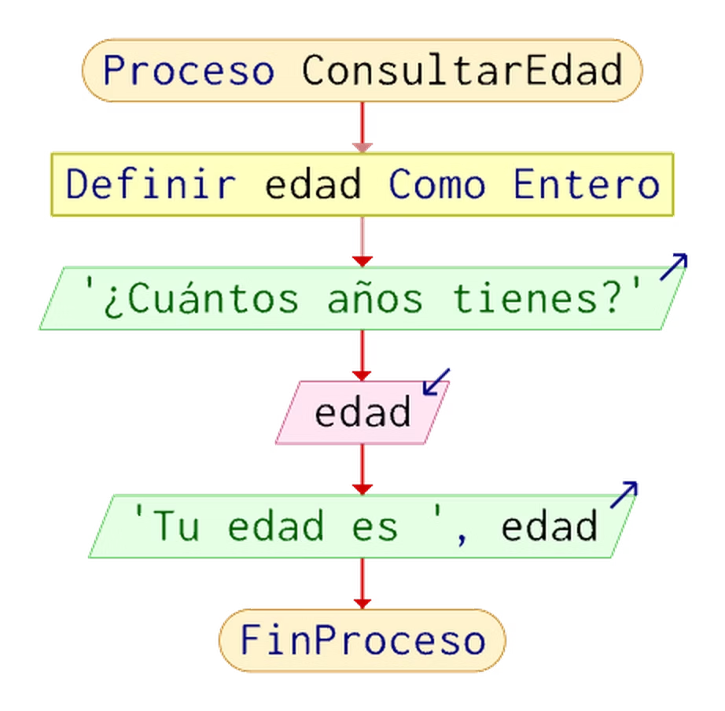
edad existe como Entero.edad guarda 16.Prueba con entrada 16
Tu edad es 16
No pongas la variable de Leer entre comillas. Escribir edad; muestra su valor; Escribir "edad"; muestra literalmente la palabra.
Dos errores diferentes. Comilla sin cerrar: error de sintaxis. Palabra donde se espera un entero: error de tipo de entrada. El código puede estar bien escrito y recibir un dato incompatible.
El objetivo es pedir dos datos de tipos diferentes y construir una frase. El nombre es una variable de texto simple, también llamada escalar: no necesitamos un arreglo para guardarlo.
Programa completo
Proceso DatosPersonales
Definir nombre Como Caracter;
Definir edad Como Entero;
Escribir "¿Cómo te llamas?";
Leer nombre;
Escribir "¿Cuántos años tienes?";
Leer edad;
Escribir "Hola, ", nombre;
Escribir "Tienes ", edad, " años.";
FinProceso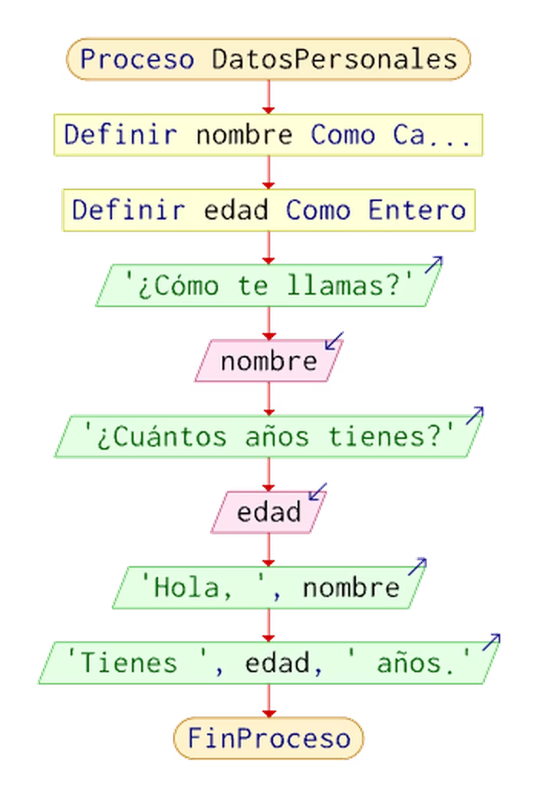
| Entradas, en orden | Salidas finales |
|---|---|
| Ana, 16 | Hola, Ana. Tienes 16 años. |
Las declaraciones preparan las variables. La primera pregunta precede a Leer nombre;; la segunda precede a Leer edad;. Cada lectura proporciona un valor antes de que se utilice.
Las dos últimas instrucciones mezclan texto fijo con datos. Las comas separan expresiones; los espacios dentro de las comillas evitan que las palabras queden pegadas.
Amplía el programa. Añade una variable de texto para la ciudad, su pregunta, su lectura y un mensaje final. No cambies el tipo de edad.
En total <- precio * cantidad;, primero se calcula el lado derecho y después se guarda el resultado a la izquierda. La flecha <- asigna; el signo = compara si dos valores son iguales.
| Operador | Operación | Ejemplo y valor |
|---|---|---|
+ | Suma | 4 + 2 → 6 |
- | Resta | 4 - 2 → 2 |
* | Multiplicación | 4 * 2 → 8 |
/ | División | 7 / 2 → 3.5 |
^ | Potencia | 2 ^ 3 → 8 |
MOD o % | Resto de división entera | 7 MOD 2 → 1 |
La multiplicación se resuelve antes que la suma: 2 + 3 * 4 da 14. Los paréntesis tienen prioridad: (2 + 3) * 4 da 20. Después se consideran potencias, multiplicaciones y divisiones, y finalmente sumas y restas.
Fragmento con inicialización
Definir contador, resto Como Entero; contador <- 0; contador <- contador + 1; resto <- 7 MOD 2;
El incremento usa el valor anterior, 0, y guarda 1. No es una igualdad matemática. Antes de dividir, asegúrate de que el divisor no sea cero.
Ahora los datos no están fijados en el código. La persona introduce dos números, el programa calcula su suma y muestra el resultado. Usamos Real para admitir también entradas decimales.
Programa completo
Proceso SumarDosNumeros
Definir a, b, suma Como Real;
Escribir "Introduce el primer número:";
Leer a;
Escribir "Introduce el segundo número:";
Leer b;
suma <- a + b;
Escribir "Suma: ", suma;
FinProceso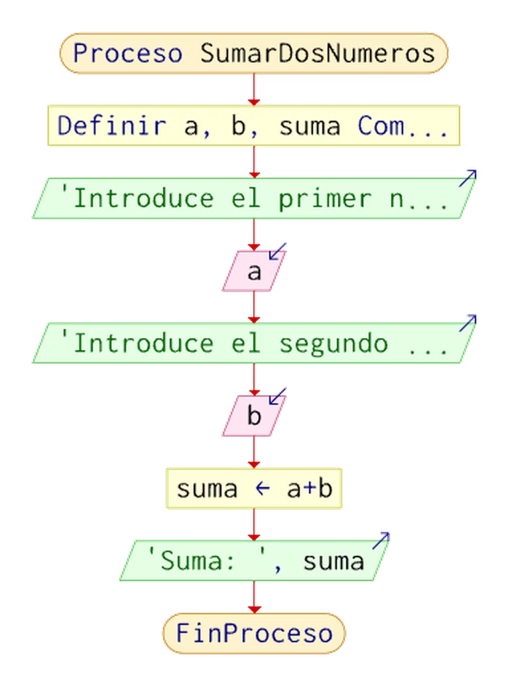
Pruebas para comparar
| A | B | Salida final |
|---|---|---|
| 4 | 6 | Suma: 10 |
| 2.5 | 1.5 | Suma: 4 |
Las lecturas son la entrada; la asignación es el cálculo; la última instrucción es la salida. La variable suma recibe su primer valor después de conocer ambos operandos.
Ejecuta el programa otra vez para hacer la segunda prueba. No sustituyas las lecturas por los números de la tabla: esas entradas deben escribirse en la consola.
Reto. Declara variables para la diferencia y el producto, calcula ambos y muéstralos. No añadas una división sin tratar antes la posibilidad de que b sea cero.
Supongamos, solo para este ejercicio, un aumento del 25 %. El nuevo sueldo incluye el original más una cuarta parte. Multiplicar por 1.25 reúne ambas cantidades en una operación.
Programa completo
Proceso AumentoSueldo
Definir nombre Como Caracter;
Definir sueldo, nuevoSueldo Como Real;
Escribir "Introduce tu nombre:";
Leer nombre;
Escribir "Introduce el sueldo actual:";
Leer sueldo;
nuevoSueldo <- sueldo * 1.25;
Escribir "Persona: ", nombre;
Escribir "Sueldo actual: ", sueldo;
Escribir "Nuevo sueldo: ", nuevoSueldo;
FinProceso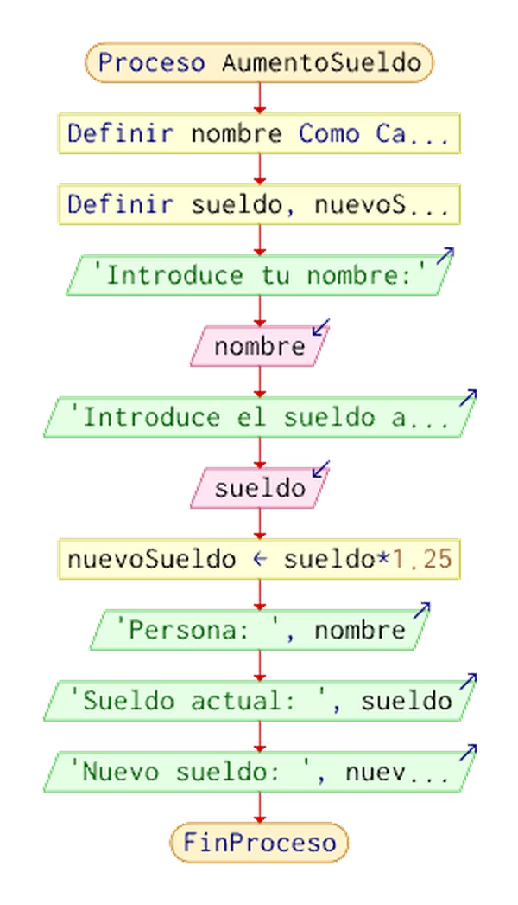
| Entradas | Salida final |
|---|---|
| Ana, 1000 | Persona: Ana. Sueldo actual: 1000. Nuevo sueldo: 1250 |
El nombre sigue siendo texto escalar. Los importes son reales; no aplicamos TRUNC, porque eliminaría una parte decimal que puede ser importante.
Haz variable el porcentaje. Declara porcentaje Como Real, pide su valor y reemplaza el cálculo por este fragmento:
nuevoSueldo <- sueldo * (1 + porcentaje / 100);
Una comparación devuelve un valor lógico. Puedes comparar números y también comprobar igualdad de texto, por ejemplo nombre = "Ana". Las variables deben tener valor antes de compararlas.
| Signo | Significado | Ejemplo verdadero |
|---|---|---|
= | Igual a | 4 = 4 |
<> | Distinto de | 4 <> 5 |
< | Menor que | 3 < 4 |
> | Mayor que | 5 > 4 |
<= | Menor o igual | 4 <= 4 |
>= | Mayor o igual | 5 >= 4 |
Y exige ambas condiciones; O, al menos una; NO invierte el valor. Sus equivalentes son &, | y ~.
| A | B | A Y B | A O B | NO A |
|---|---|---|---|---|
| V | V | V | V | F |
| V | F | F | V | F |
| F | V | F | V | V |
| F | F | F | F | V |
V significa Verdadero; F significa Falso.
Fragmentos de condiciones: dentro y fuera
(numero >= 50) Y (numero <= 100) (numero < 50) O (numero > 100)
Para estar entre 50 y 100, incluidos los extremos, deben cumplirse ambos límites. Usar O en esa comprobación aceptaría valores fuera del intervalo.
Una decisión permite ejecutar instrucciones diferentes según una condición. Con Si solo se ejecuta la rama elegida. Sino es opcional: se utiliza cuando también hay una acción para el caso falso.
Plantilla de sintaxis, no programa completo
Si condicion Entonces
// Instrucciones si es verdadera
Sino
// Instrucciones si es falsa
FinSiPrograma completo
Proceso MayorDeEdad
Definir edad Como Entero;
Escribir "Introduce tu edad:";
Leer edad;
Si edad >= 18 Entonces
Escribir "Mayor de edad";
Sino
Escribir "Menor de edad";
FinSi
FinProceso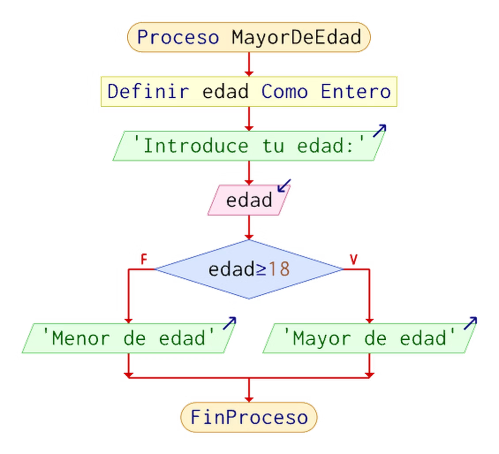
| Entrada | Condición | Salida elegida |
|---|---|---|
| 17 | Falso | Menor de edad |
| 18 | Verdadero | Mayor de edad |
Al terminar la rama, la ejecución continúa después de FinSi. Las instrucciones interiores llevan sangría y punto y coma; la cabecera y el cierre delimitan el bloque.
En el ejemplo del café, mostrar «¿Quieres azúcar?» no toma una decisión. Haría falta leer una respuesta y evaluar una condición para elegir qué hacer.
Segun selecciona un caso a partir del valor de una variable. Para mantener el perfil Estricto, aquí utilizamos opciones numéricas, no letras. Cada etiqueta termina con dos puntos.
Programa completo
Proceso MenuBebidas
Definir opcion Como Entero;
Escribir "1 Café, 2 Té, 3 Agua";
Leer opcion;
Segun opcion Hacer
1:
Escribir "Elegiste café";
2:
Escribir "Elegiste té";
3:
Escribir "Elegiste agua";
De Otro Modo:
Escribir "Opción desconocida";
FinSegun
FinProceso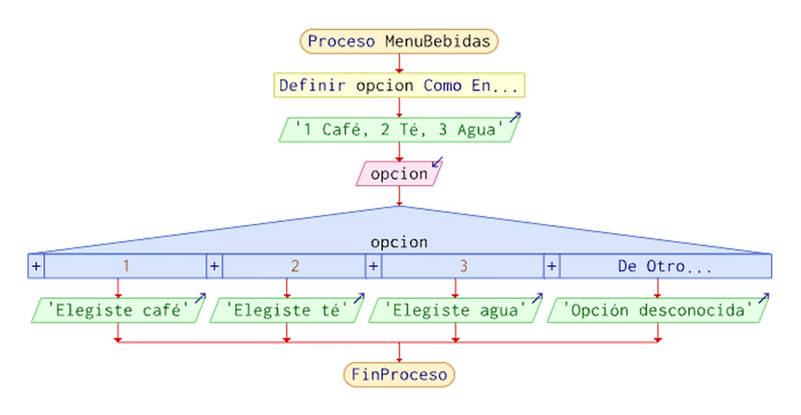
| Prueba | Entrada | Salida |
|---|---|---|
| Conocida | 2 | Elegiste té |
| Alternativa | 8 | Opción desconocida |
De Otro Modo atiende los valores que no coinciden con ninguna etiqueta. No significa «el último caso»: es la alternativa para cualquier opción no prevista.
Para comprobar rangos, como una edad mayor o igual que 18, usa Si. También puedes anidar decisiones para evaluar texto o varias condiciones. No traslades a Estricto un ejemplo de Segun con letras que dependa de un perfil flexible.
Un ciclo repite instrucciones. Mientras comprueba la condición antes de entrar: continúa cuando es verdadera y sale cuando es falsa. Por eso su cuerpo puede ejecutarse cero veces.
Programa completo
Proceso ContarTres
Definir contador Como Entero;
contador <- 1;
Mientras contador <= 3 Hacer
Escribir contador;
contador <- contador + 1;
FinMientras
FinProceso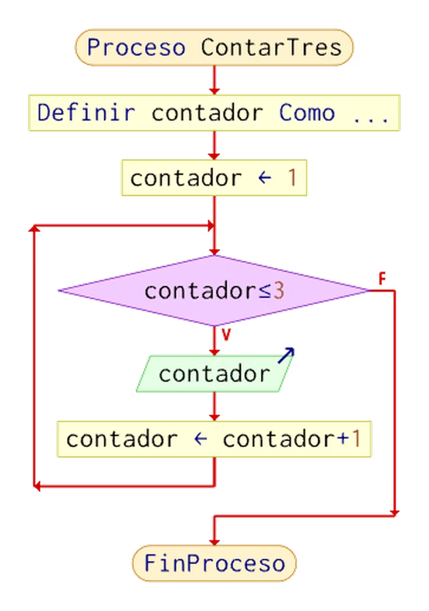
Comprobar: si es falsa, salir. Si es verdadera: mostrar, aumentar y volver.
| contador | ¿Es menor o igual que 3? | Salida |
|---|---|---|
| 1 | Verdadero | 1 |
| 2 | Verdadero | 2 |
| 3 | Verdadero | 3 |
| 4 | Falso | Ninguna; termina. |
La forma general es Mientras condicion Hacer, cuerpo y FinMientras. Si olvidas aumentar el contador, seguirá valiendo 1 y la condición nunca cambiará: el ciclo no terminará.
Repetir ejecuta primero el cuerpo y después comprueba Hasta Que. Termina cuando la condición es verdadera; el cuerpo siempre se ejecuta al menos una vez.
Programa completo
Proceso PedirPositivo
Definir numero Como Real;
Repetir
Escribir "Introduce un número positivo:";
Leer numero;
Hasta Que numero > 0
Escribir "Número aceptado: ", numero;
FinProceso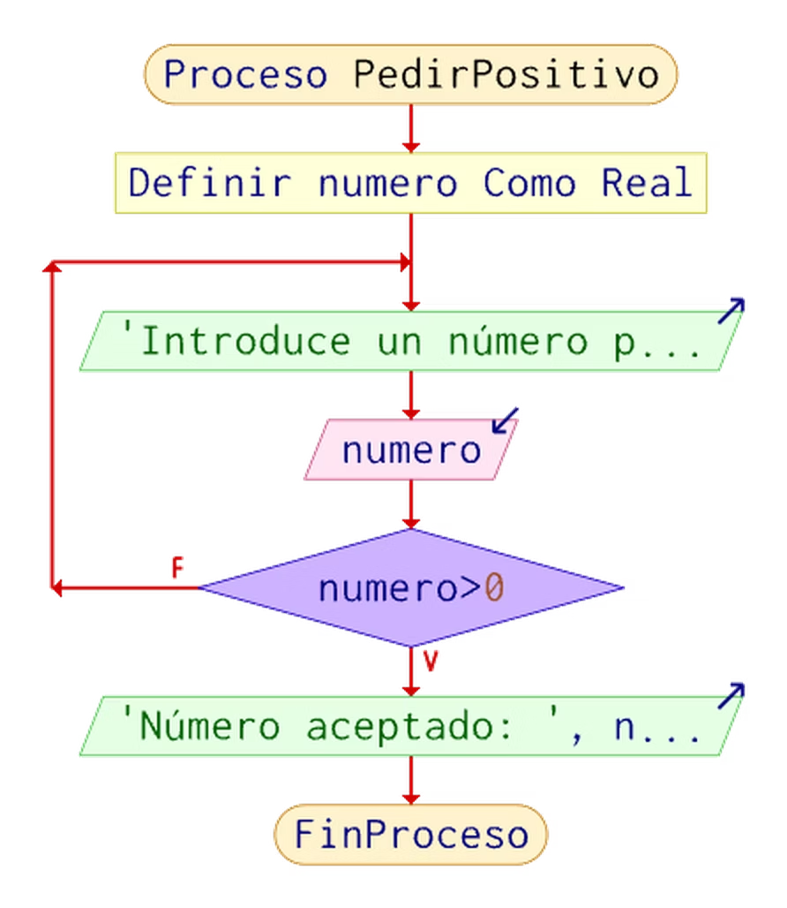
| Entrada | numero > 0 | Qué ocurre |
|---|---|---|
| -2 | Falso | Vuelve a preguntar. |
| 0 | Falso | Vuelve a preguntar. |
| 3 | Verdadero | Sale del ciclo. |
Última salida de la prueba: Número aceptado: 3
Mientras es una condición de continuación; Hasta Que, de salida. No hace falta igualdad: aquí basta con que el número sea mayor que cero.
Para es útil cuando conoces el recorrido de un contador: indica el valor inicial, el final y el paso. Si omites Con Paso, el incremento predeterminado es 1.
Programa completo
Proceso ContarHastaCinco
Definir i Como Entero;
Para i <- 1 Hasta 5 Hacer
Escribir i;
FinPara
FinProceso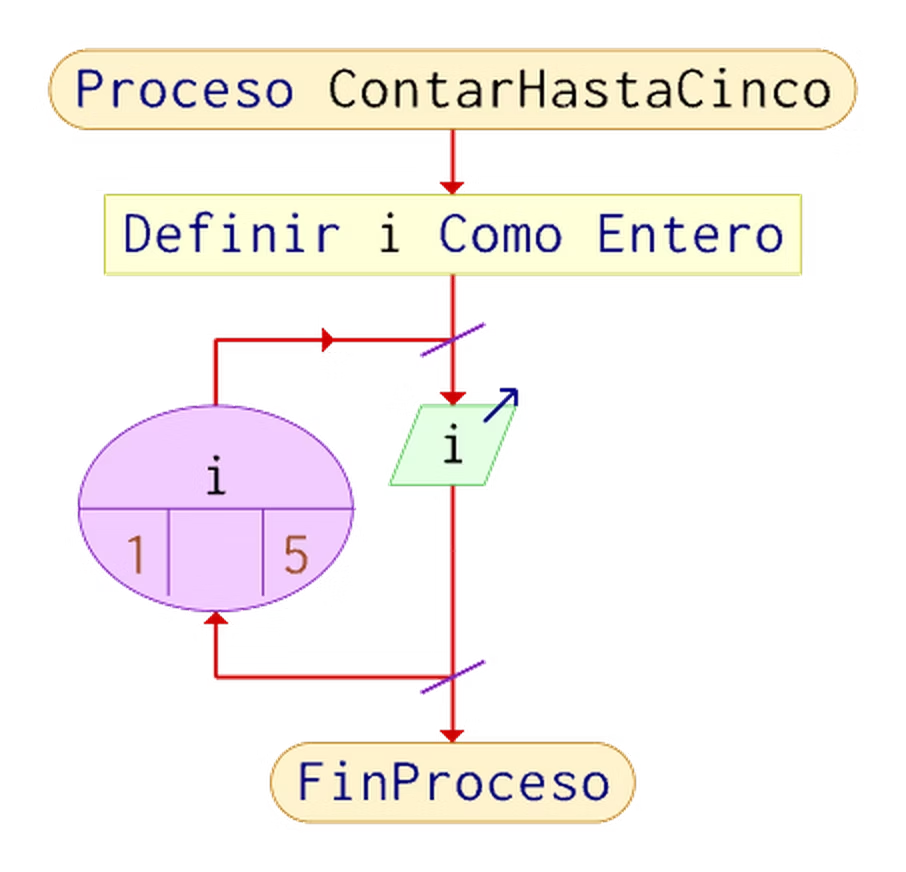
Salida, una cifra por línea
1 2 3 4 5
El ciclo asigna el valor inicial a i y actualiza el contador en cada vuelta. Aquí se incluyen 1 y 5. No añadas otro incremento dentro del cuerpo.
Fragmento inverso, con i ya declarada
Para i <- 5 Hasta 1 Con Paso -1 Hacer
Escribir i;
FinParaLa forma general es Para i <- inicio Hasta fin Con Paso paso Hacer, seguida del cuerpo y FinPara. El paso negativo permite descender: el fragmento muestra 5, 4, 3, 2 y 1.
Un contador indica la vuelta o posición actual. Un acumulador reúne resultados, por ejemplo la suma de los números leídos. No cumplen la misma función.
Leeremos tres números: i cuenta las lecturas y suma acumula sus valores. Inicializamos la suma en cero porque todavía no se ha recibido ningún dato.
Programa completo
Proceso PromedioTres
Definir i Como Entero;
Definir numero, suma, promedio Como Real;
suma <- 0;
Para i <- 1 Hasta 3 Hacer
Escribir "Introduce el número ", i;
Leer numero;
suma <- suma + numero;
FinPara
promedio <- suma / 3;
Escribir "Suma: ", suma;
Escribir "Promedio: ", promedio;
FinProceso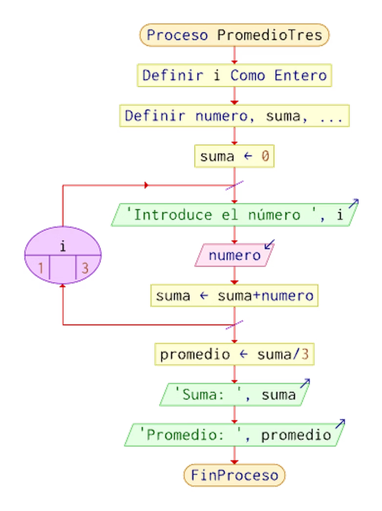
Traza con entradas 6, 8 y 10
| i | numero leído | suma después de acumular |
|---|---|---|
| 1 | 6 | 6 |
| 2 | 8 | 14 |
| 3 | 10 | 24 |
Salidas finales: Suma: 24. Promedio: 8.
Una traza registra cómo cambian los valores paso a paso. El promedio se calcula después de FinPara, cuando la suma ya incluye las tres entradas. No vuelvas a poner suma a cero dentro del ciclo: perderías lo acumulado.
Validar es comprobar si un dato cumple las reglas del ejercicio. Aceptaremos notas de 0 a 100. Una vez válida, la nota se compara con 60, un umbral didáctico, no una norma universal.
Programa completo
Proceso NotaValida
Definir nota Como Real;
Repetir
Escribir "Introduce una nota de 0 a 100:";
Leer nota;
Si (nota < 0) O (nota > 100) Entonces
Escribir "Fuera de rango";
FinSi
Hasta Que (nota >= 0) Y (nota <= 100)
Si nota >= 60 Entonces
Escribir "Aprobado";
Sino
Escribir "Pendiente";
FinSi
FinProceso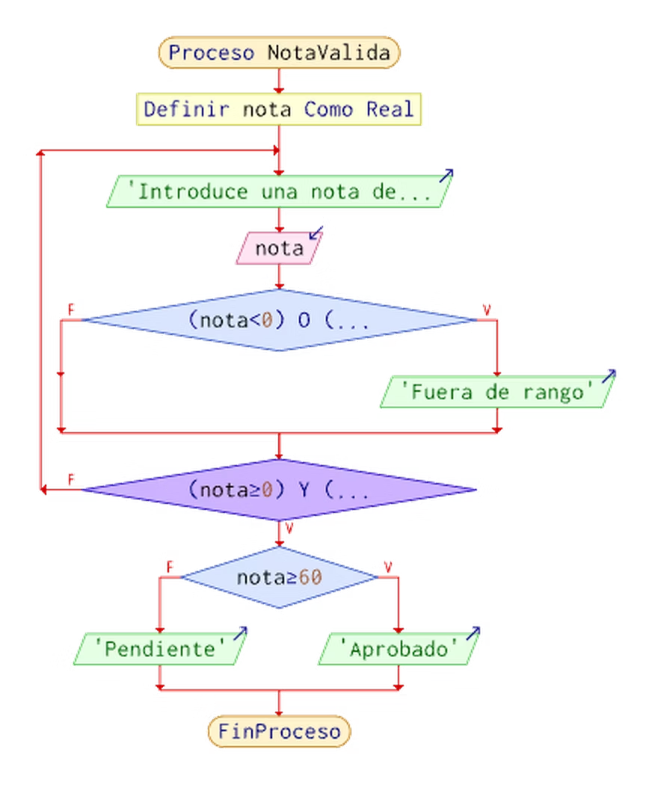
| Entrada | ¿Se acepta? | Resultado |
|---|---|---|
| -1 | No | Fuera de rango |
| 101 | No | Fuera de rango |
| 75 | Sí | Aprobado |
Anidar significa colocar un bloque dentro de otro. El primer Si está dentro de Repetir: se cierra antes de comprobar Hasta Que. La sangría permite ver esa relación.
Esta validación comprueba el rango de un número. Introducir una letra en una variable numérica no se soluciona solo comprobando si el valor está entre 0 y 100.
Un arreglo reúne varios elementos del mismo tipo bajo un nombre. Cada elemento se identifica con un índice. Con base 0, un arreglo de tres elementos tiene los índices 0, 1 y 2.
notas[0] | notas[1] | notas[2] |
|---|---|---|
| Primera | Segunda | Tercera |
Programa completo · base 0
Proceso TresNotas
Definir notas Como Real;
Definir i Como Entero;
Dimension notas[3];
Para i <- 0 Hasta 2 Hacer
Escribir "Nota del índice ", i;
Leer notas[i];
FinPara
Para i <- 0 Hasta 2 Hacer
Escribir "Nota: ", notas[i];
FinPara
FinProceso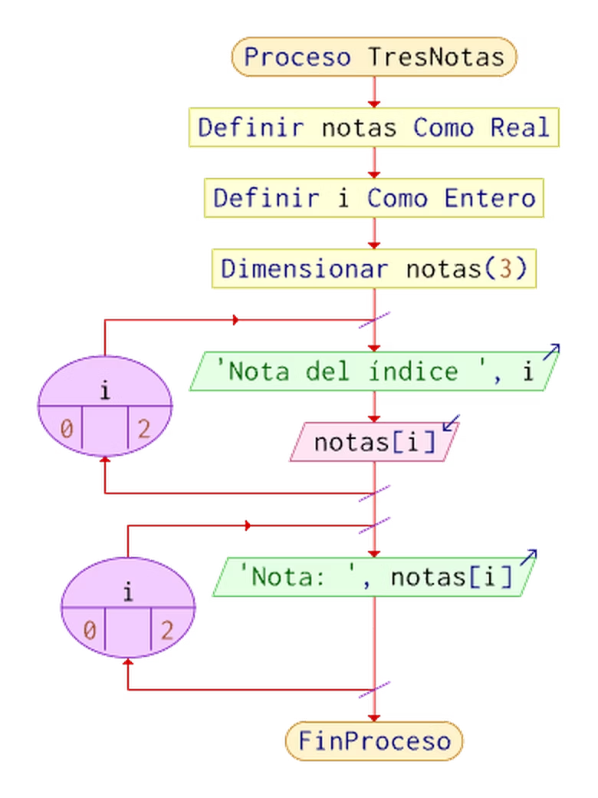
Definir establece el tipo; Dimension reserva la cantidad de elementos. El primer ciclo inicializa cada casilla mediante una lectura. Solo después, el segundo ciclo muestra sus valores.
Prueba: entradas 6, 8 y 10
Nota: 6 Nota: 8 Nota: 10
Cuidado: notas[3] está fuera del arreglo. Cambiar la base del perfil cambia los índices válidos, no la cantidad de elementos. Los ejemplos de este manual mantienen la base 0.
Una matriz es un arreglo con dos índices. Dimension tabla[2,3]; reserva dos filas y tres columnas: seis elementos. Con base 0, las filas son 0 y 1; las columnas, 0, 1 y 2.
| Col. 0 | Col. 1 | Col. 2 | |
|---|---|---|---|
| Fila 0 | tabla[0,0] | tabla[0,1] | tabla[0,2] |
| Fila 1 | tabla[1,0] | tabla[1,1] | tabla[1,2] |
Programa completo · base 0
Proceso MatrizDosPorTres
Definir tabla Como Entero;
Definir fila, columna Como Entero;
Dimension tabla[2,3];
Para fila <- 0 Hasta 1 Hacer
Para columna <- 0 Hasta 2 Hacer
Leer tabla[fila,columna];
FinPara
FinPara
Escribir "Última casilla: ", tabla[1,2];
FinProceso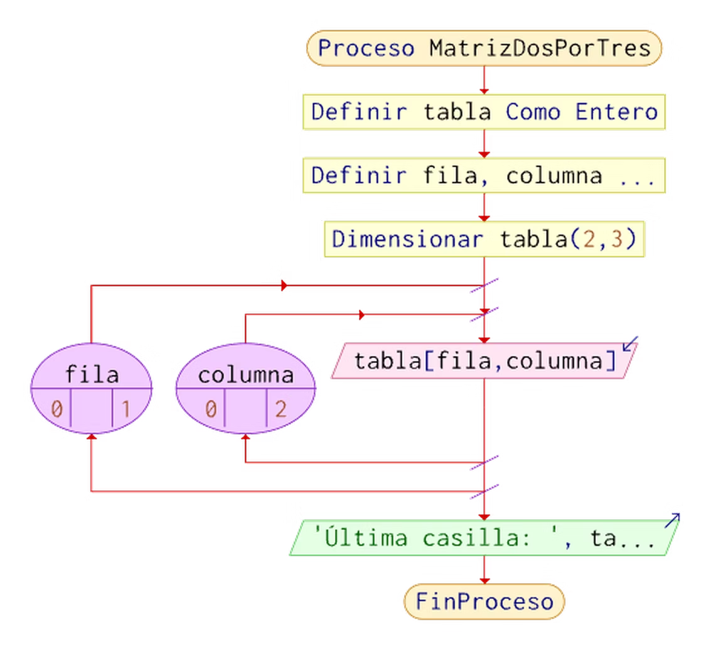
El ciclo exterior elige una fila y el interior recorre sus tres columnas; después pasa a la siguiente fila. Se cierra primero el ciclo interior.
Prueba: introduce 1, 2, 3, 4, 5 y 6
Última casilla: 6
Dimension indica cantidades, no índices máximos; tabla[2,3] no es válida.
Un subproceso agrupa instrucciones bajo un nombre para poder llamarlas desde otra parte del programa. Un parámetro es un dato que recibe. Aquí, MostrarSaludo recibe un nombre y muestra un mensaje.
Programa completo, con subproceso externo
SubProceso MostrarSaludo(nombre)
Escribir "Hola, ", nombre;
FinSubProceso
Proceso Principal
Definir nombre Como Caracter;
Escribir "Introduce tu nombre:";
Leer nombre;
MostrarSaludo(nombre);
FinProcesoEntrada Ana · salida del subproceso
Hola, Ana
El parámetro recibe su tipo del argumento enviado; no lo vuelvas a declarar. Las variables nuevas que se creen dentro de un subproceso son locales: solo se usan en su ámbito.
Define los subprocesos fuera de Proceso Principal. Esta llamada no devuelve un valor: escribe MostrarSaludo(nombre);, sin anteponer Escribir.
Un subproceso puede calcular y devolver un valor. Ese retorno se utiliza en una expresión, igual que un número. En este ejemplo, el resultado del cálculo se guarda en la variable doble.
Programa completo
SubProceso resultado <- CalcularDoble(numero)
Definir resultado Como Real;
resultado <- numero * 2;
FinSubProceso
Proceso Principal
Definir entrada, doble Como Real;
Escribir "Introduce un número:";
Leer entrada;
doble <- CalcularDoble(entrada);
Escribir "Doble: ", doble;
FinProceso| Argumento | Cálculo | Retorno |
|---|---|---|
4.5 (entrada) | ×2 (numero * 2) | 9 (doble) |
La cabecera nombra una única variable de retorno, resultado, y no lleva punto y coma. Esa variable nueva sí se declara. El parámetro numero recibe su tipo del argumento y no se redefine.
Salida esperada con entrada 4.5
Doble: 9
No es obligatorio usar Escribir para invocar el subproceso. Primero lo llamamos dentro de una asignación y después mostramos el valor guardado. Calcular y mostrar son tareas distintas.
Por valor trabaja con una copia: cambiar el parámetro no cambia la variable del programa que llama. Por referencia permite modificar esa variable original. Compara las dos llamadas sobre el mismo contador.
Programa completo
SubProceso IncrementarCopia(n Por Valor)
n <- n + 1;
FinSubProceso
SubProceso IncrementarOriginal(n Por Referencia)
n <- n + 1;
FinSubProceso
Proceso Principal
Definir contador Como Entero;
contador <- 5;
IncrementarCopia(contador);
Escribir "Tras copia: ", contador;
IncrementarOriginal(contador);
Escribir "Tras referencia: ", contador;
FinProceso| Después de la llamada | Valor en el principal |
|---|---|
IncrementarCopia | 5; solo cambió la copia. |
IncrementarOriginal | 6; cambió el original. |
Salida en pantalla
Tras copia: 5 Tras referencia: 6
Los parámetros no se vuelven a declarar. Declara las variables locales nuevas y las del principal. Las palabras Por Referencia se escriben en la definición, no en la llamada, y aquí la llamada recibe una variable que puede modificarse.
Las funciones integradas reciben argumentos entre paréntesis y producen un valor que puedes asignar o mostrar. En trigonometría, los ángulos se expresan en radianes.
| Función | Argumento y significado | Ejemplo |
|---|---|---|
RC(x) | Raíz cuadrada; x no negativo. | RC(9) → 3 |
ABS(x) | Valor absoluto de x. | ABS(-4) → 4 |
LN(x) | Logaritmo natural; x positivo. | LN(1) → 0 |
EXP(x) | Exponencial de base e. | EXP(0) → 1 |
SEN(x) | Seno del ángulo x. | SEN(0) → 0 |
COS(x) | Coseno del ángulo x. | COS(0) → 1 |
ATAN(x) | Arco tangente, en radianes. | ATAN(0) → 0 |
TRUNC(x) | Quita la parte decimal. | TRUNC(3.8) → 3 |
REDON(x) | Redondea al entero cercano. | REDON(3.8) → 4 |
AZAR(n) | n entero positivo; devuelve de 0 a n−1. | AZAR(3): 0, 1 o 2 |
Complemento opcional: cadenas. Longitud cuenta caracteres; Subcadena extrae una parte; Mayusculas y Minusculas cambian el uso de mayúsculas; Concatenar une textos. Dependen de habilitar funciones de cadenas en las opciones del lenguaje. Los ejercicios básicos no requieren ese cambio.
Respeta los dominios válidos: no dividas por cero ni calcules una raíz real de un número negativo. Una función existente también puede recibir un argumento no válido.
Esta tabla reúne fragmentos de referencia, no programas completos. Las cabeceras de bloques necesitan instrucciones interiores y su cierre correspondiente.
| Tarea | Patrón |
|---|---|
| Declarar | Definir edad Como Entero; |
| Asignar | edad <- 18; |
| Leer | Leer edad; |
| Mostrar | Escribir "Edad: ", edad; |
| Decidir | Si condicion Entonces / FinSi |
| Elegir caso | Segun opcion Hacer / FinSegun |
| Repetir antes | Mientras condicion Hacer / FinMientras |
| Repetir después | Repetir / Hasta Que condicion |
| Contar | Para i <- 1 Hasta 3 Hacer / FinPara |
| Dimensionar | Dimension notas[3]; |
| Separar tarea | SubProceso Tarea(dato) / FinSubProceso |
Corrige primero el error señalado y vuelve a comprobar. Un cierre ausente puede provocar varios mensajes posteriores.
No copies como ejecutables los ejemplos teóricos de Registro o archivos de otras fuentes. Distingue PSeInt Estricto de variantes flexibles y de pseudocódigo genérico.
Escribe tres programas con condicionales y bucles. Predice los resultados y comprueba cada rama y la salida de cada ciclo.
1. Saludar según la edad: Si / Sino
2. Validar medidas: Repetir / Hasta Que
3. Sumar y aplicar descuento: Para + Si
Criterio de finalización. Funciona en Estricto, inicializa los datos y supera las pruebas. Comprueba ambas ramas del Si, el rechazo de medidas inválidas y que los bucles terminen.